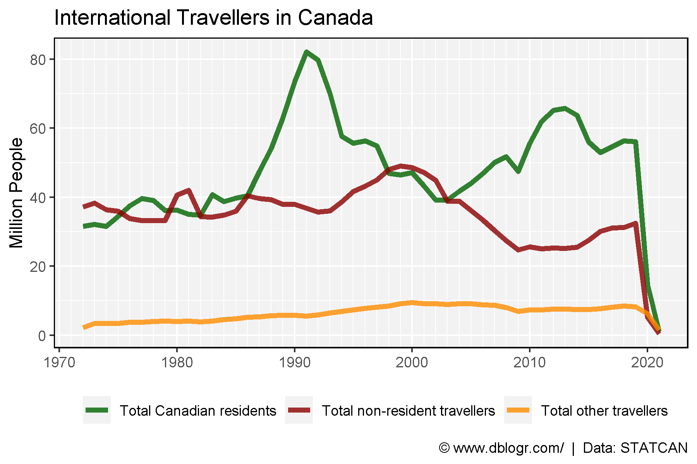
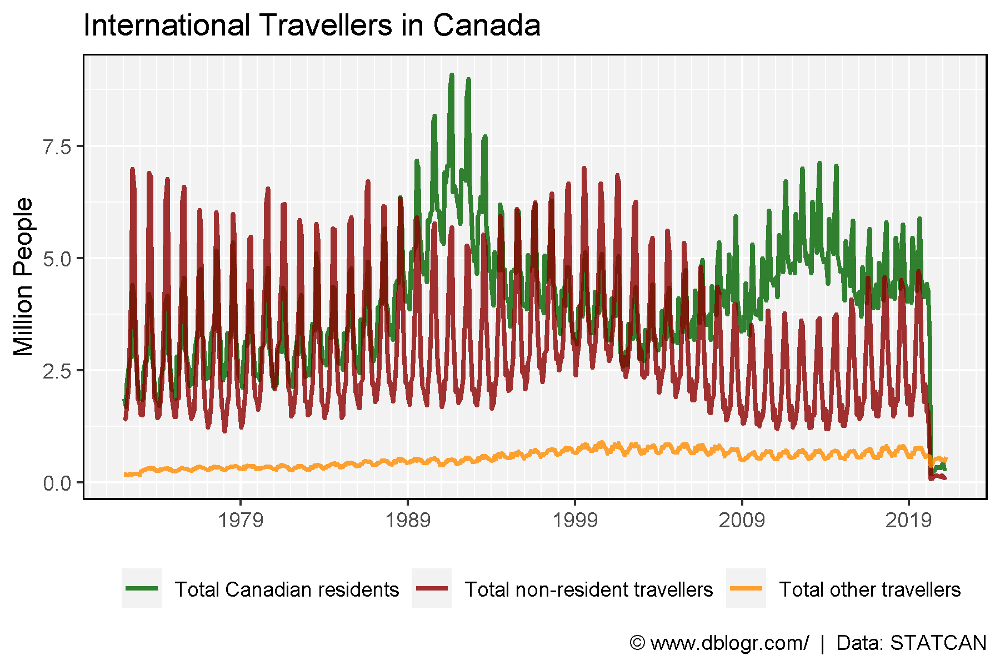
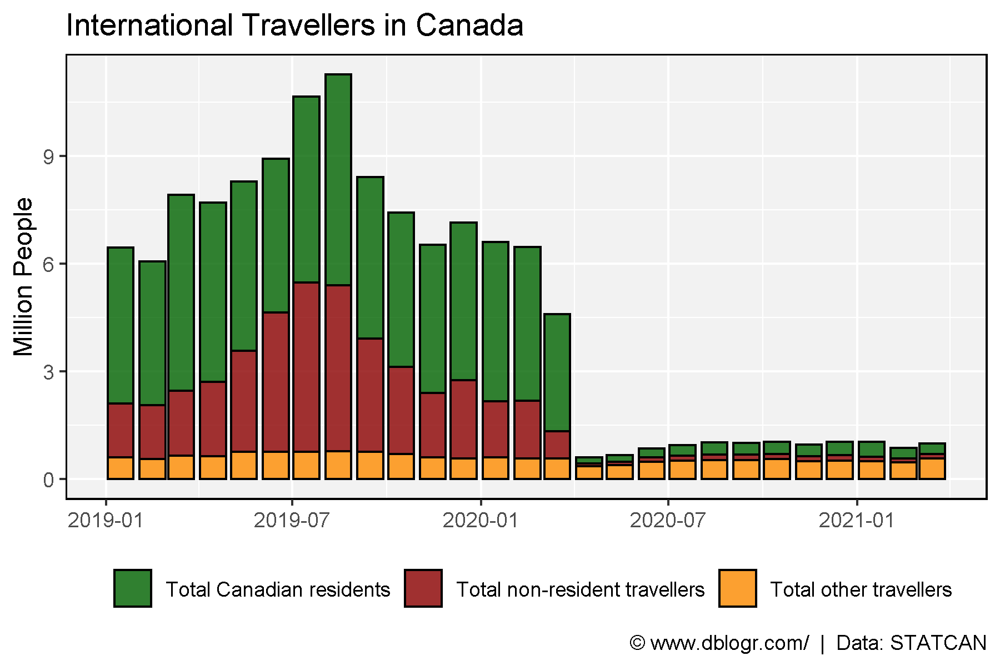

# devtools::install_github("derekmichaelwright/agData")
library(agData) # Loads: tidyverse, ggpubr, ggbeeswarm, ggrepel
# Prep data
d1 <- read.csv("2410004101_databaseLoadingData.csv") %>%
select(Date=1, Area=GEO, Unit=UOM, Value=VALUE,
Measurement=Traveller.characteristics) %>%
mutate(Year = as.numeric(substr(Date, 1, 4)),
Month = as.numeric(substr(Date, 6, 8)),
Date = as.Date(paste0(Date,"-15"), format = "%Y-%m-%d"))# Prep data
colors <- c("darkgreen", "darkred", "darkorange")
xx <- d1 %>%
filter(Measurement != "Total international travellers") %>%
group_by(Year, Measurement) %>%
summarise(Value = sum(Value))
# Plot
mp <- ggplot(xx, aes(x = Year, y = Value / 1000000, color = Measurement)) +
geom_line(size = 1.5, alpha = 0.8) +
scale_color_manual(name = NULL, values = colors) +
scale_x_continuous(minor_breaks = 1970:2021) +
theme_agData(legend.position = "bottom") +
labs(title = "International Travellers in Canada",
y = "Million People", x = NULL,
caption = "\xa9 www.dblogr.com/ | Data: STATCAN")
ggsave("canada_travel_01.png", mp, width = 6, height = 4)
# Prep data
xx <- d1 %>% filter(Measurement != "Total international travellers")
# Plot
mp <- ggplot(xx, aes(x = Date, y = Value / 1000000, color = Measurement)) +
geom_line(size = 1, alpha = 0.8) +
scale_color_manual(name = NULL, values = colors) +
scale_x_date(date_breaks = "10 years", date_labels = "%Y", date_minor_breaks = "1 year") +
theme_agData(legend.position = "bottom") +
labs(title = "International Travellers in Canada",
y = "Million People", x = NULL,
caption = "\xa9 www.dblogr.com/ | Data: STATCAN")
ggsave("canada_travel_02.png", mp, width = 6, height = 4)
2019 vs 2020
# Prep data
xx <- d1 %>%
filter(Year > 2018, Measurement != "Total international travellers")
# Plot
mp <- ggplot(xx, aes(x = Date, y = Value / 1000000, fill = Measurement)) +
geom_bar(stat = "identity", color = "black", alpha = 0.8) +
scale_fill_manual(name = NULL, values = colors) +
#scale_x_date(date_breaks = "1 Month", date_labels = "%Y-%m") +
theme_agData(legend.position = "bottom") +
labs(title = "International Travellers in Canada",
y = "Million People", x = NULL,
caption = "\xa9 www.dblogr.com/ | Data: STATCAN")
ggsave("canada_travel_03.png", mp, width = 6, height = 4)
© Derek Michael Wright www.dblogr.com/